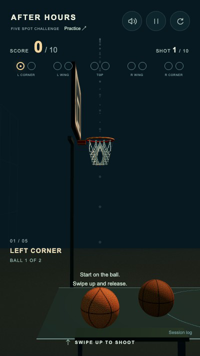
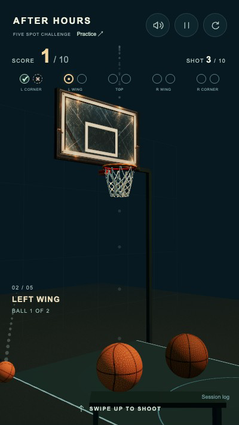
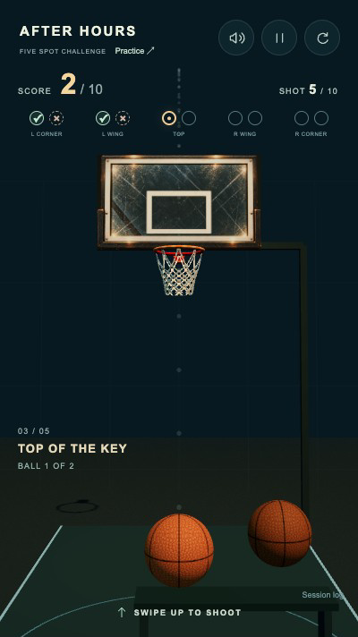
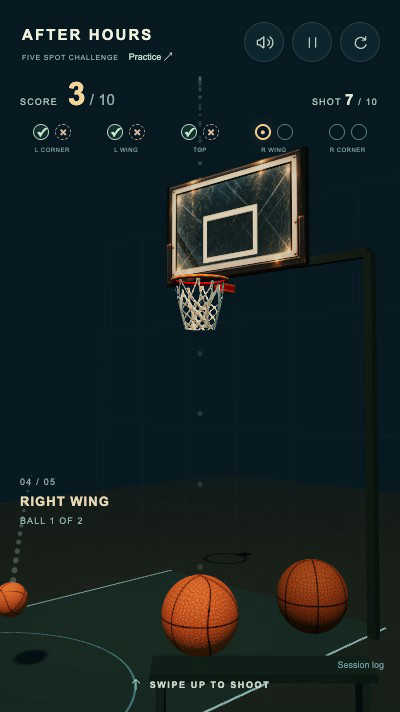
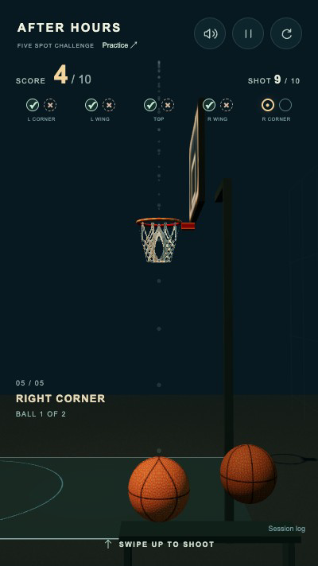
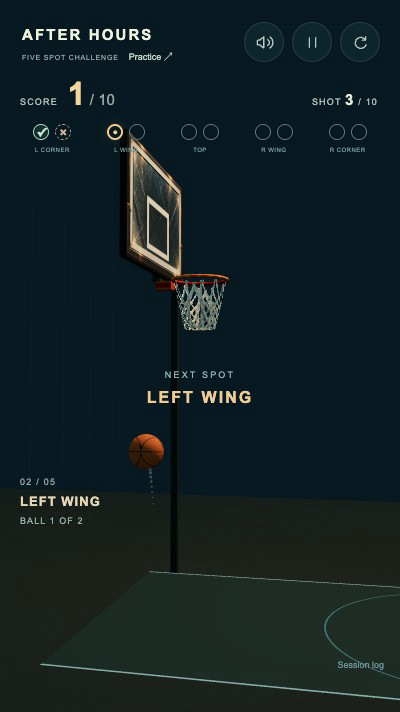
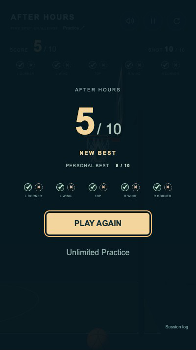
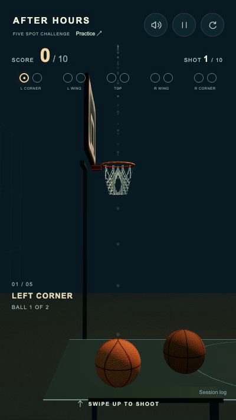
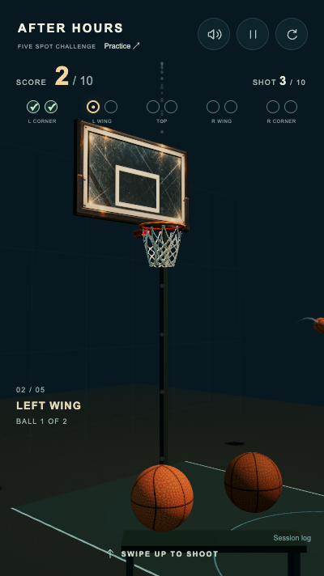

AFTER HOURS · 20 OCTOBER 2026
Five positions. Ten real shots.
Native Chrome touch input drives every shot and retry shown here. The
fixed basket, ball motion, misses, camera changes and audio are actual
gameplay. Read-only diagnostics record the physical launch vectors and
outcomes.
5 physical positions2 balls per spot10 outcomes per roundNo timer or miss limit
Play Challenge ·
Unlimited Practice ·
Implementation report ·
Session, vectors and camera states ·
Browser checks
Five genuine camera angles
Choose a tested portrait size. Each frame is a prepared first ball after
reaching that position through real shots.

01 · LEFT CORNER · 0°

02 · LEFT WING · 45°

03 · TOP OF THE KEY · 90°

04 · RIGHT WING · 135°

05 · RIGHT CORNER · 180°
Complete ten-shot round, with actual game sound
The full recording alternates five clean swishes and five physical rim
misses. It includes all camera changes, final results, a native PLAY AGAIN
tap, and a real first shot in the fresh round. The shorter recording
isolates results and retry.
Full uninterrupted round + retry · VP8 / Opus
Results → PLAY AGAIN → first corner
Transition, completed round and retry

Physical orbit · input blocked until settled

Ten resolved outcomes · saved best

New round ID · cleared outcomes · best retained
Focused support-pole correction
The initial left diagonal view put the old non-colliding support through
the net. Moving it behind the board's outer right edge keeps the same
physical hoop and opens the shooting corridor.

Before
After
Measured spin-axis rebound differences
·
Preserved physics, art, audio and net hashes
· Recorded source hashes
Verified in desktop Chrome with native touch events and viewport
emulation. Physical phone performance, human make rate and five-angle
comfort still require human testing. The legacy negative spin sign is
retained. No new copyrighted assets or additional gameplay mechanics.